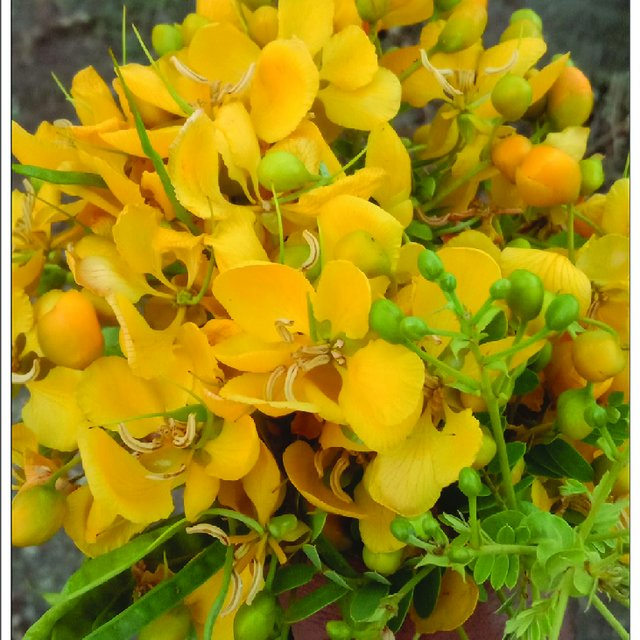
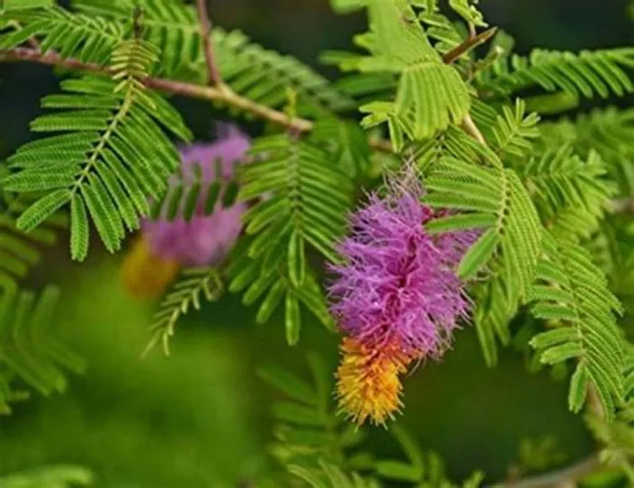

___________________________TALANGANA_____________________________

Telangana is a state in India situated on the south-central
stretch of the Indian peninsula on the high Deccan Plateau.It is the eleventh-largest state and the twelfth-most populated state in India with a geographical area of 112,077 km2 (43,273 sq mi) and 35,193,978 residents as per 2011 census. On 2 June 2014, the area was separated from the northwestern part of Andhra Pradesh as the newly formed state of Telangana, with Hyderabad as its capital. Its other major cities include Warangal, Nizamabad, Khammam, Karimnagar and Ramagundam. Telangana is bordered by the states of Maharashtra to the north, Chhattisgarh to the northeast, Karnataka to the west, and Andhra Pradesh to the east and south. The terrain of Telangana consists mostly of the Deccan Plateau with dense forests covering an area of 27,292 km2 (10,538 sq mi). As of 2019, the state of Telangana is divided into 33 districts..
TALANGANA STATE EMBLEM :
TALANGANA STATE ANIMAL:
 The chital or cheetal, also known as the spotted deer, chital deer, and axis deer, is a deer species native to the Indian subcontinent. It was first described and given a binomial name by German naturalist Johann Christian Polycarp Erxleben in 1777. A moderate-sized deer, male chital reach 90 cm (35 in) and females 70 cm (28 in) at the shoulder. While males weigh 70–90 kg (150–200 lb), females weigh around 40–60 kg (88–132 lb). It is sexually dimorphic; males are larger than females, and antlers are present only on males. The upper parts are golden to rufous, completely covered in white spots. The abdomen, rump, throat, insides of legs, ears, and tail are all white. The antlers, three-pronged, are nearly 1 m (3 ft 3 in) long.
The chital or cheetal, also known as the spotted deer, chital deer, and axis deer, is a deer species native to the Indian subcontinent. It was first described and given a binomial name by German naturalist Johann Christian Polycarp Erxleben in 1777. A moderate-sized deer, male chital reach 90 cm (35 in) and females 70 cm (28 in) at the shoulder. While males weigh 70–90 kg (150–200 lb), females weigh around 40–60 kg (88–132 lb). It is sexually dimorphic; males are larger than females, and antlers are present only on males. The upper parts are golden to rufous, completely covered in white spots. The abdomen, rump, throat, insides of legs, ears, and tail are all white. The antlers, three-pronged, are nearly 1 m (3 ft 3 in) long.
TALANGANA STATE FLOWER:
Senna auriculata is a leguminous tree in the subfamily Caesalpinioideae. It is commonly known by its local names matura tea tree, avaram or ranawara , or the English version avaram senna. It is the State flower of Telangana.[1] It occurs in the dry regions of India and Sri Lanka. It is common along the sea coast and the dry zone in Sri Lanka.
TALANGANA STATE TREE:
Prosopis cineraria, also known as ghaf, is a species of flowering tree in the pea family, Fabaceae. It is native to arid portions of Western Asia and the Indian Subcontinent, including Afghanistan, Bahrain, Iran, India, Oman, Pakistan, Saudi Arabia, the United Arab Emirates and Yemen. Its leaves are shattered and stripy along its branch. It can survive extreme drought. It is an established introduced species in parts of Southeast Asia, including Indonesia.
The ʿGhaf is the national tree of the United Arab Emirates. Through the Give a Ghaf campaign its citizens are urged to plant it in their gardens to combat desertification and to preserve their country's heritage. The desert village of Nazwa in the UAE is home to the Al Ghaf Conservation Reserve
_____________________TOP_____________________